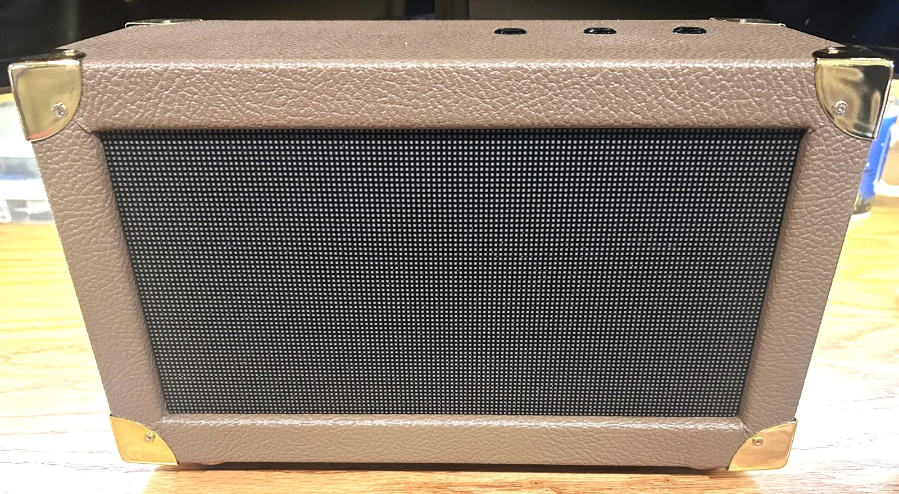
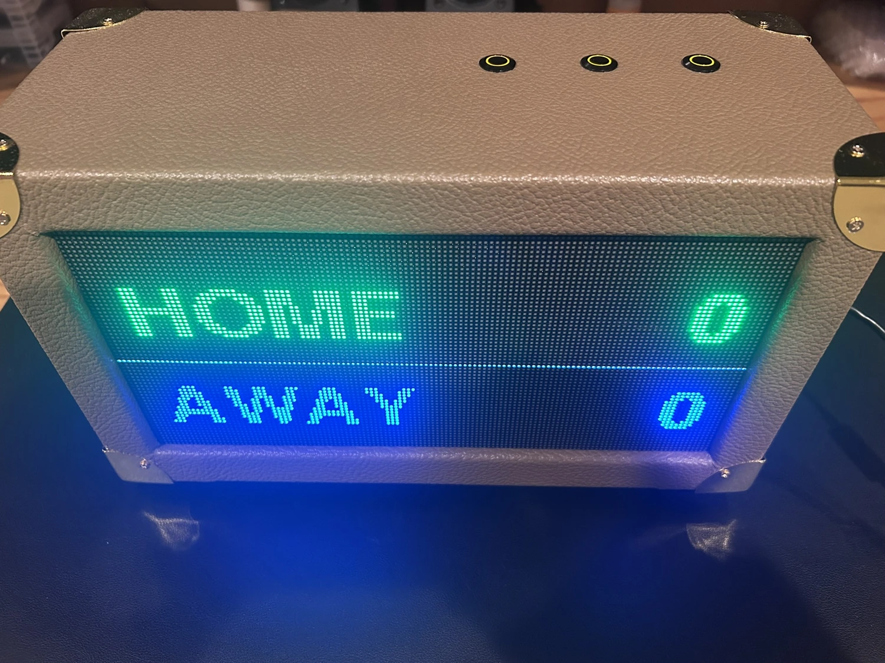
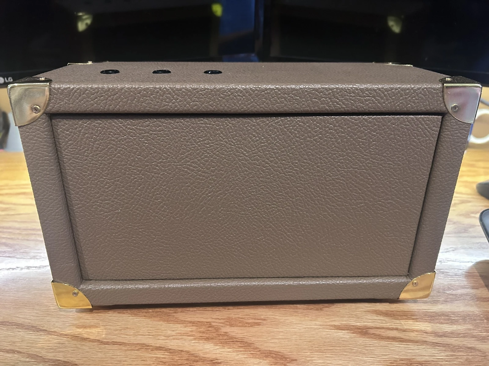

Firmware
Start with physical controls or flash the Bluetooth sketch for phone control.
Choose a sketch ↗Source on GitHubA DIY LED scoreboard
A bright RGB matrix, three real buttons, and an optional iPhone controller, all housed in a Tolex-covered cabinet.

Get the panel working on the bench first. Add the controls, then fit everything into the cabinet once scoring works.
Start with physical controls or flash the Bluetooth sketch for phone control.
Choose a sketch ↗Source on GitHubFollow the power path, wire the three switches, and match all 14 HUB75 signals to the ESP32-S3.
See the diagrams ↗Build the SwiftUI controller in Xcode for live scores, resets, and editable names.
Set up the controller ↗App source on GitHub
The electronics
One board reads the cabinet buttons, drives the display, and connects to the optional iPhone controller over Bluetooth LE.
See the controller and pinout ↗
The enclosure
The wooden cabinet uses a removable back for wiring access. Panel-mount DC and USB-C keep power and programming accessible from the outside.
Plan the enclosure ↗